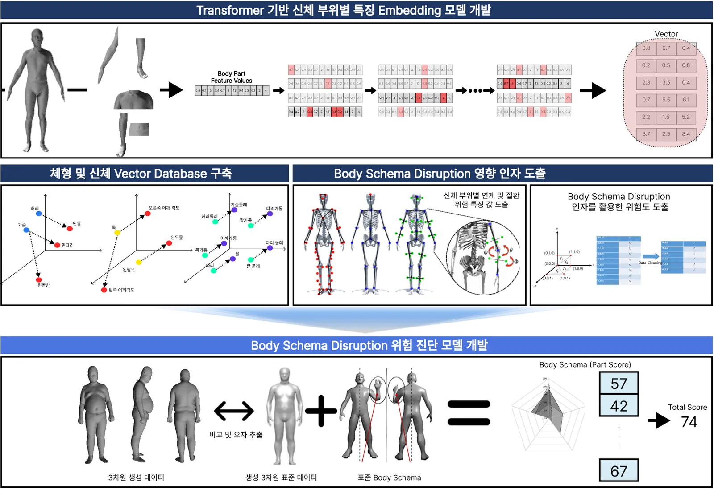
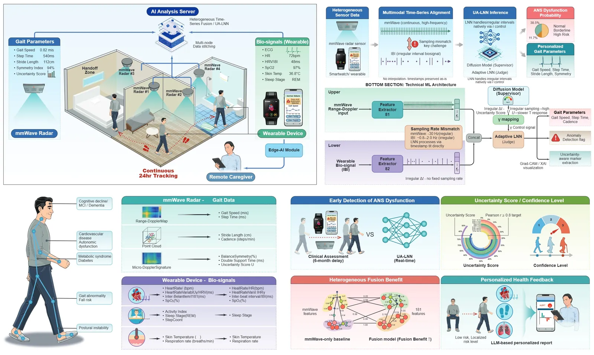
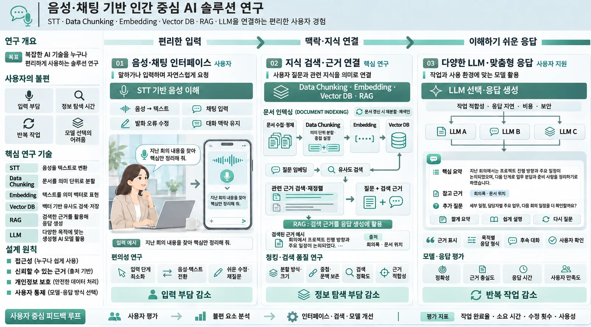
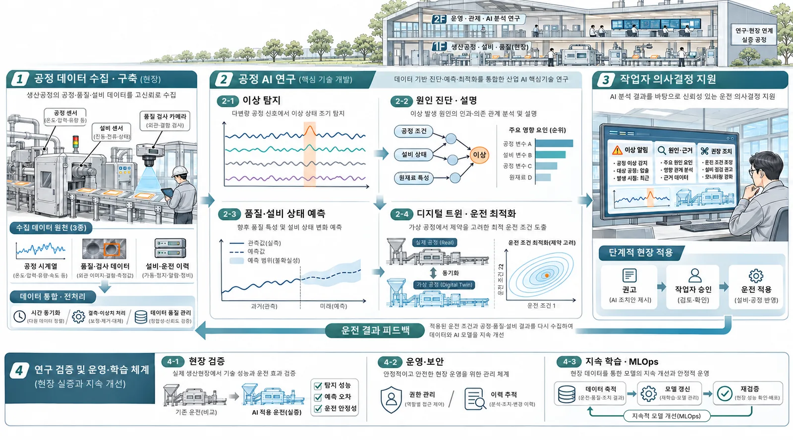
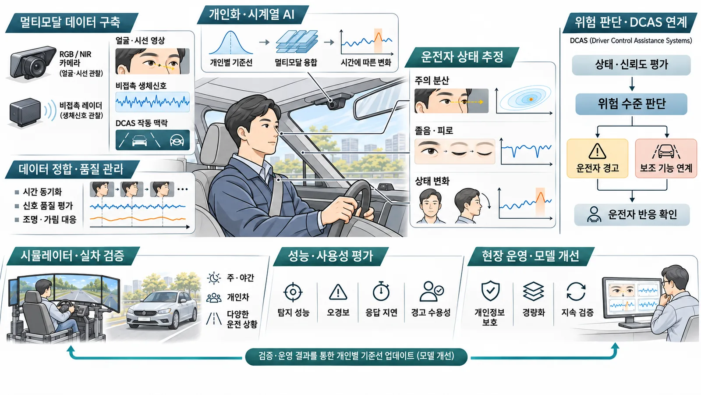

RESEARCH THRUSTS
사람의 몸과 움직임, 말, 그리고 사람이 일하는 현장에서 나온 데이터를 다룹니다. 지금은 아래 다섯 분야를 연구하고 있습니다.
멀티모달 AI 기반 디지털 헬스케어
Multimodal Digital Healthcare
2D 이미지에서 3D 신체 모델을 복원해 길이, 둘레, 부피, 자세 정렬 같은 체형 지표를 계산합니다. 이 지표에 생체·행동 데이터를 더해 체형 변화와 신체 불균형을 보고, 근골격계 질환 위험을 예측합니다.
- 체형·자세 측정
- 2D 깊이 이미지로 3D 신체를 복원하고 척추선을 찾아 자세를 평가합니다. 측정 장비 없이 카메라만으로 잴 수 있는 것이 목표입니다.
- 질환 위험 예측
- 3D 신체 지표와 생체·행동 데이터로 근골격계 질환, 자세 이상, 비만, 근감소증 위험을 조기에 찾아냅니다.

적응형 AI 기반 보행 헬스케어
Adaptive Gait Healthcare
몸에 닿지 않는 mmWave 레이다로 실내에서 걷는 모습을 측정해 고령자의 보행 이상을 조기에 감지합니다. 사물이 많은 실내에서는 레이다 신호가 흔들리기 때문에, 모델이 자기 판단의 불확실성을 추정하고 그에 맞게 반응을 조절하도록 만듭니다.
- 보행 지표 측정
- 보행 속도, 스텝 타임 같은 지표를 비접촉으로 계산해 평소와 다른 걸음을 찾아냅니다.
- 불확실성을 아는 모델
- Diffusion Model과 Liquid Neural Network로 클러터 환경의 잡음에 적응하고, 결과는 LLM이 쉬운 말로 풀어 전달합니다.

음성·채팅 기반 인간 중심 AI 솔루션
Human-Centered Voice & Chat AI Solutions
복잡한 AI 기술을 누구나 편하게 쓸 수 있도록, 말하거나 채팅으로 요청하면 필요한 지식을 찾아 이해하기 쉬운 답으로 돌려주는 솔루션을 연구합니다. STT, Data Chunking, Embedding, Vector DB, RAG, LLM을 하나로 이어 입력 부담과 정보 탐색 시간, 반복 작업을 줄이는 것이 목표입니다.
- 편리한 입력
- STT로 말을 글로 옮기고 채팅 입력과 대화 맥락을 함께 다룹니다. 발화 오류를 바로잡고 입력 단계를 최소화합니다.
- 지식 검색·근거 연결
- 문서를 의미 단위로 나눠(Data Chunking) Embedding·Vector DB에 저장하고, 질문과 관련된 근거를 찾아 RAG로 응답에 활용합니다. 분할 방식과 검색 정확도도 함께 연구합니다.
- 맞춤형 응답
- 작업 성격, 응답 속도, 비용, 보안에 맞춰 여러 LLM 중 알맞은 모델을 고르고, 출처를 밝힌 요약과 쉬운 설명, 후속 질문으로 답합니다.

AI 기반 자율제조 및 공정 최적화
AI for Autonomous Manufacturing
시멘트 공정처럼 변수가 많은 현장의 원료 투입량, 공정 변수, 에너지 사용량, 품질 데이터를 함께 학습해 품질을 미리 예측하고 이상에 대응합니다. 설비나 데이터 구조가 바뀌어도 다시 쓸 수 있는 모델을 만드는 것이 목표입니다.
- 품질 예측
- 운전 데이터로 주요 품질 지표를 미리 예측해 생산을 안정시키고 품질 관리 부담을 줄입니다.
- 공정 변화 적응
- 시간에 따라 공정 데이터의 성질이 달라지는 현상(operational drift)을 자기지도학습으로 분석하고, Embedding·Transformer 모델로 새 설비와 데이터 구조에 대응합니다.

AI 기반 운전자 상태 인식 및 개인화 안전지원
Driver State Recognition & Personalized Safety
카메라 영상 하나로 운전자의 심박·호흡·산소포화도와 표정·졸음 징후를 함께 읽어 지금 상태를 파악합니다. 사람마다 운전 습관과 위험 신호가 달라서, 준지도학습으로 개인 데이터를 빠르게 반영한 맞춤 모델을 만듭니다.
- 운전자 상태 인식
- 생리 신호(심박, 호흡, 산소포화도)와 행동 신호(표정, 피부색, 졸음)를 함께 분석합니다.
- 개인화 위험 예측
- 운전자별 패턴을 반영해 사고 가능성을 미리 알려 주는 안전지원 모델을 개발합니다.
